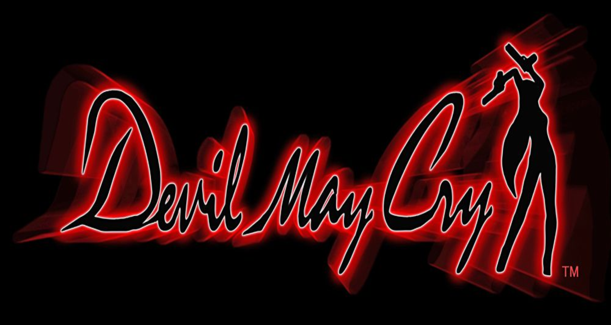
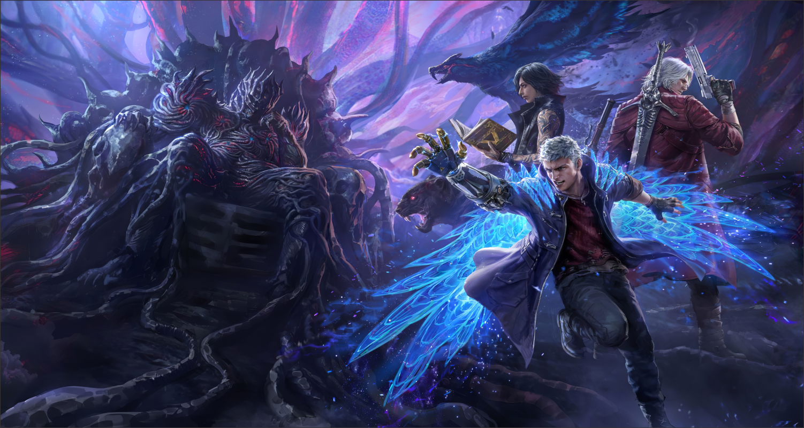
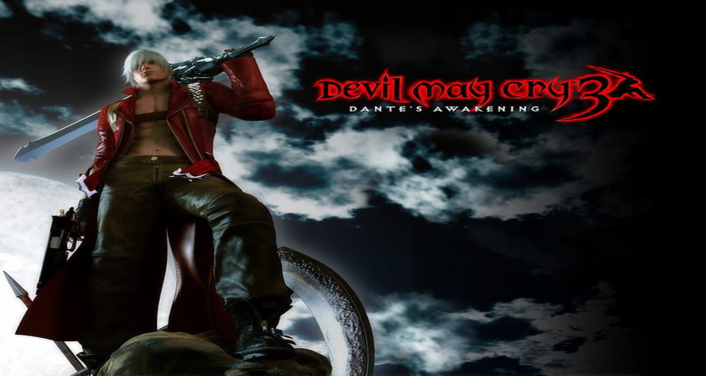
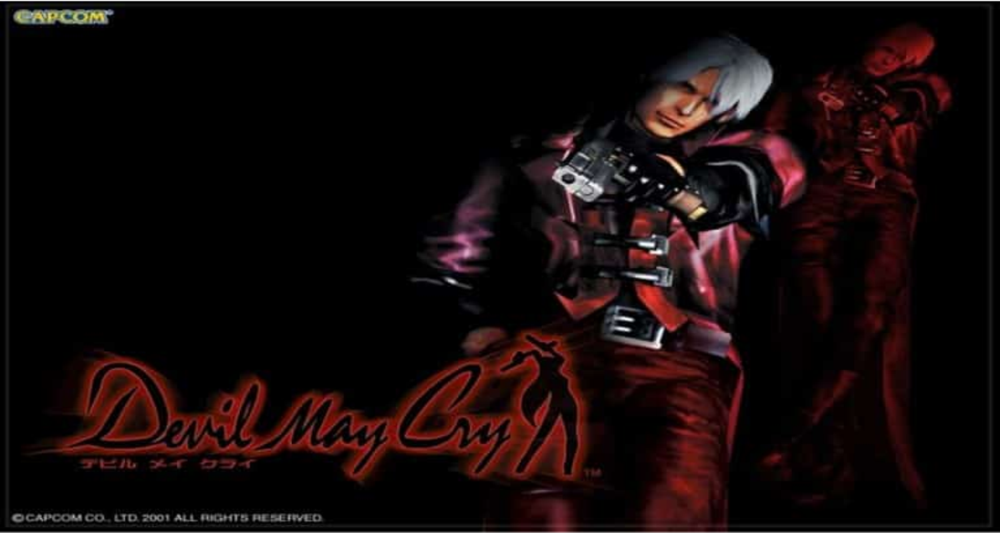
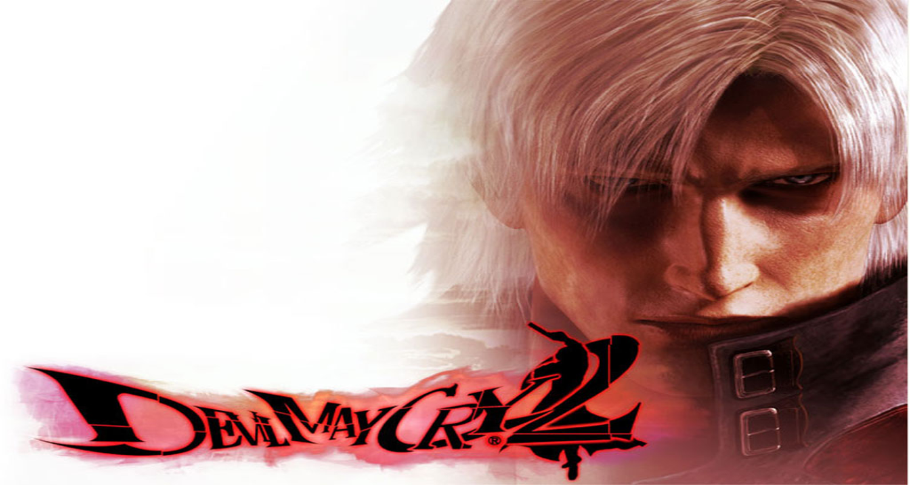
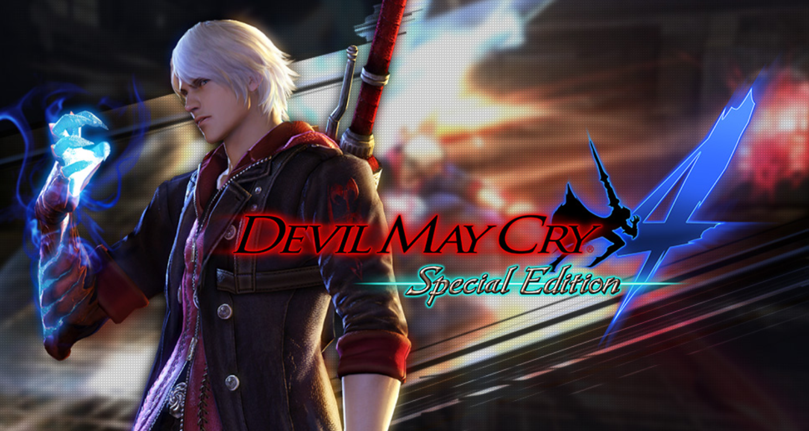
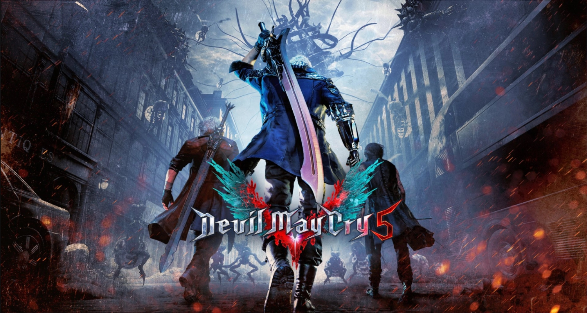
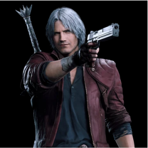
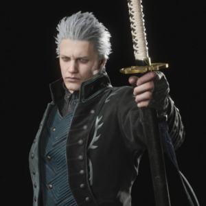
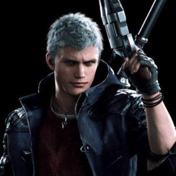

|  | |||
| Sobre | Noticias | História | Personagens |

A cronologia de Devil May Cry; conheça a história da franquiaSaiba a cronologia de Devil May Cry e conheça a história da franquia e Dante Um sucesso tremendo no gênero hack’n slash de jogos eletrônicos. Veja abaixo, a cronologia de Devil May Cry, conhecendo a história da franquia, podendo optar por jogar os títulos na sequência dos acontecimentos. O jogo da Capcom teve uma tentativa de reboot, DmC: Devil May Cry e outras edições especiais, mas vamos focar na sequência original dos títulos da mesma linha temporal. DEVIL MAY CRY 3O terceiro jogo lançado é o primeiro na ordem dos acontecimentos, o título começa na loja ainda sem nome de Dante quando um homem misterioso chamado Arkham aparece para oferecer um convite do irmão de Dante, Vergil, na forma de um ataque demoníaco brutal. DEVIL MAY CRY 1Devil May Cry começa com Dante sendo atacado em seu escritório por uma misteriosa mulher chamada Trish. Ele a impressiona evitando facilmente seu ataque e diz a ela ser um caça demônios em busca dos responsáveis pela morte de sua mãe e irmão. DEVIL MAY 2Devil May Cry 2 começa com Lucia e Dante entrando separadamente em um museu onde um item importante chamado Medaglia está armazenado. Depois de derrotar um grupo de demônios no museu, Lucia convida Dante para segui-la até a Ilha Dumary, onde ele é apresentado a Matier, sua mãe. DEVIL MAY CRY 4Devil May Cry 4 inicia com Nero correndo em direção à Opera House central, onde a Order of the Sword, uma ordem religiosa que adora o lendário cavaleiro demônio Sparda e luta para proteger o mundo dos demônios, está conduzindo uma cerimônia, com seu braço direito em uma tipóia. DEVIL MAY CRY 5Encerrando a cronologia de Devil May Cry, cinco anos após os eventos de Devil May Cry 4, Nero montou sua própria agência de caça a demônios com base em uma van com um letreiro de neon “Devil May Cry” que Dante deu a ele com o apoio de sua namorada, Kyrie e seu engenheiro, Nico. |
Dante é um dos protagonistas de Devil May Cry. Dante é filho de Sparda, um demônio lendário que se rebelou contra sua raça em uma guerra entre o Mundo Humano e o Submundo e salvou a humanidade |
||
Vergil é o irmão gémeo de Dante. Os dois são filhos do demónio Sparda e de Eva. Vergil é meio-demónio, o que lhe dá habilidades sobre humanas. Ao contrário do seu irmão, Vergil é mais sério em relação ao seu treino. A sua personalidade também é oposta à do irmão, com um comportamento calmo, frio e estoico ao contrário de Dante que é mais arrogante e sempre em busca de emoção. |
|||
Nero é o protagonista de Devil May Cry 4. Ele é um dos Holy Knight da Order of the Sword,uma ordem religiosa que idolatra Sparda. Ele é um orfão criado pela ordem,na cidade de Fortuna. |
|||